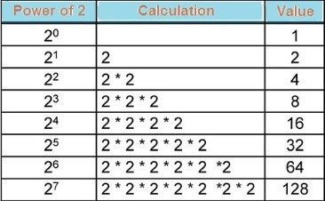
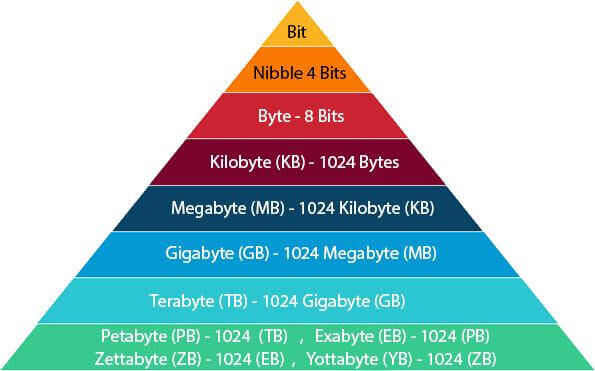

01-01.Binary number system, Measuring memory size
Table of Contents
Milić Vukojičić
Email: milic.vukojicic@iss.edu.rs / vukojicic.milic@gmail.com
Released under CC-BY 4.0 license
1. Number systems
- How and why computers use binary?
- Understand decimal, hexadecimal and binary.
- Conversion of 8-bit binary numbers.
2. Binary number system
- Counting things
- 1.. 2.. 3..
- Keep track and represent things
- "For example how many days do we have in the past week?"
3. Base 10 (Decimal or Denary) number system
- Why we use 10 digits?
- From 0 to 9..
- 0,1,2…8,9
4. Place value
- Number 231
- In any number sys In any number system we have place value.
- 2 - hundreds 3-tens 1-ones
- 2x100 + 3x10 + 1x1 = 200+30+1= 231
5. Base 2 (Binary)
- Basis of all modern computing
- Why?
6. Power of 2

| 128 | 64 | 32 | 16 | 8 | 4 | 2 | 1 |
|---|---|---|---|---|---|---|---|
7. Converting
- Base-10 to Base-2 132(10) = ?(2) 14(10) = ?(2)
- Base-2 to Base-10 1011010(2) = ?(10) 11011(2) = ?(10)
8. Measuring memory size
- Most computer systems have storage which is measured in bytes.
- A byte is a unit of data that is eight binary digits long.

9. Bit-Byte …

10. Register
- Is a small piece of memory built into the central processing unit(CPU) of a computer systems where values and instructions are temporarily held.
- They have very fast writing and reading time
11. Practice
11.1. Convert from Binary to Decimal
| Binary | Decimal |
|---|---|
| 000011100 | |
| 1100 | |
| 11111 | |
| 110111 | |
| 110011 |
11.2. Convert for Decimal to Binary
| Decimal | Binary |
|---|---|
| 1254 | |
| 359 | |
| 133 | |
| 987 | |
| 134 | |
| 973 |